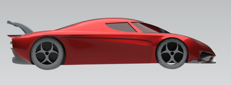
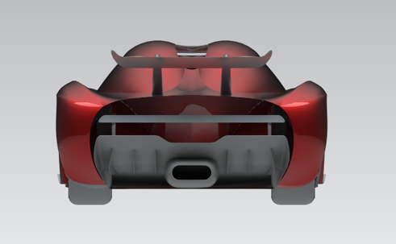
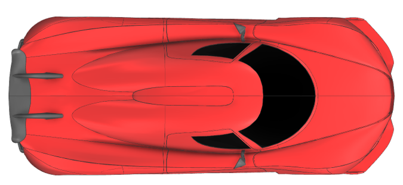
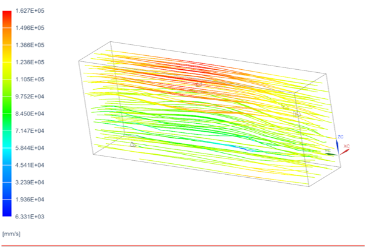

Regera Model and Simulation
This project is a parametric CAD model and simulation study of the Koenigsegg Regera, a 1,500-horsepower hybrid grand tourer with only 80 units produced from 2015 to 2022. Working in Siemens NX, I built the model from reference images, scaling them to one another and aligning them to the datum of the main assembly. I traced modeling curves over the images and built the body as a full surface model using lofted, curve mesh, fill, ruled, and studio surfaces, then sewed and thickened the surfaces into solid bodies. The wheels follow the car’s staggered setup of 19-inch wheels in front and 20-inch wheels in the rear, and I brought all the parts together in a full model assembly. Using the finished model, I ran a CFD wind tunnel study at the car’s 250 mph top speed to find its drag coefficient, which published sources put between 0.32 and 0.37.




